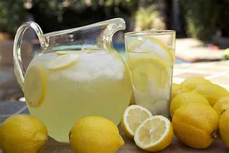

lemonade

Description
Simple recipe for homemade lemonade.
Ingredients
- 2 ¼ teaspoons active dry yeast
- 1 ½ teaspoons white sugar
- 1 ⅛ cups warm water - 110 to 115 degrees F (43 to 45 degrees C)
- 7 cups of ice-cold water
- 3 cups all-purpose flour
- ½ cup corn oil
- 1 ½ teaspoons kosher salt
- butter as neede, for greasing
Steps
- Gather all ingredients.
- Combine sugar and 1 cup water in a small saucepan. Stir to dissolve sugar while mixture comes to a boil.
Set aside to cool slightly.
- Meanwhile, roll lemons around on your counter to soften. Cut in half lengthwise,
and squeeze into a liquid measuring cup. Add pulp to the juice, but discard
any seeds. Continue juicing until you have 1 1/2 cups fresh juice and pulp.
- Pour 7 cups ice-cold water into a pitcher. Stir in lemon juice and pulp, then add simple syrup to taste. Add ice.